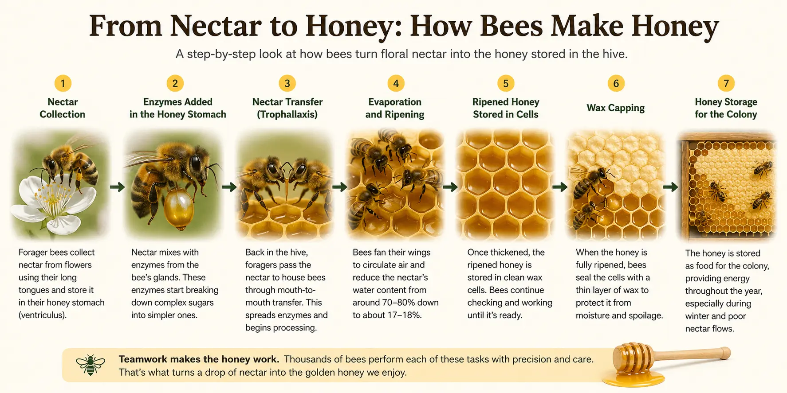
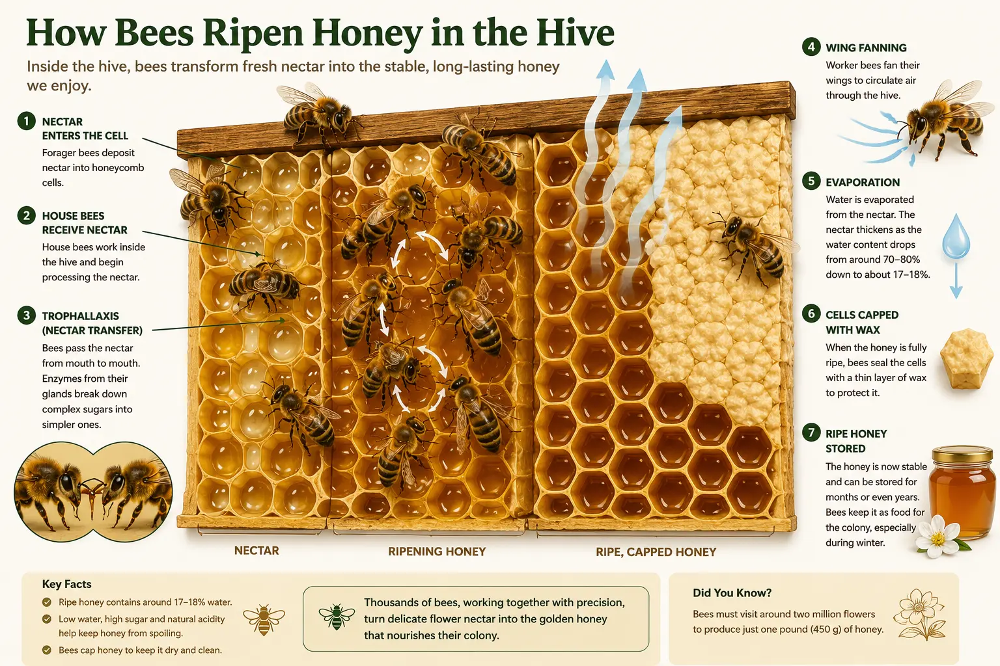
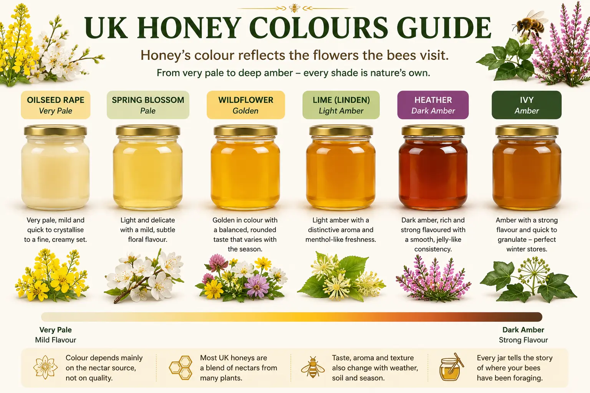

How Bees Make Honey
How Do Bees Make Honey? Step-by-Step from Nectar to Capped Honey
Last updated: 17 July 2026
How do bees make honey step by step? Bees collect nectar from flowers, carry it back to the hive in a special honey stomach, mix it with enzymes, spread it into wax cells and fan it until enough water evaporates. Once the honey is ripe, they seal it with wax cappings for storage. This guide explains the full process in simple terms for beginners and UK beekeepers.
If you are completely new to beekeeping, you may also find the Getting Started guide helpful, as it explains the basic colony structure, seasonal expectations and beginner terms used throughout this page.
How Bees Make Honey at a Glance
If you're looking for the short version, here's how bees turn flower nectar into honey.
| Step | What happens |
|---|---|
| Collect nectar | Forager bees collect sugary nectar from flowers. |
| Honey stomach | Nectar is stored in a special honey stomach separate from digestion. |
| Add enzymes | Natural enzymes begin converting complex sugars into simpler sugars. |
| Pass to house bees | House bees receive the nectar through trophallaxis. |
| Spread into comb | The nectar is placed into wax honeycomb cells. |
| Fan the hive | Worker bees evaporate water by fanning their wings. |
| Honey ripens | The nectar thickens until it becomes stable honey. |
| Cap the cells | Bees seal the honey with fresh wax ready for storage. |

Quick overview: how honey is made
Honey making is a team effort. Forager bees collect thin, sugary nectar from flowers and carry it home in a special honey stomach. Inside the hive, they pass this nectar to house bees, which mix it with enzymes and spread it out in shallow wax cells. Worker bees then fan their wings to evaporate water, thickening the nectar into honey. Once the moisture is low enough and the honey is stable, they seal the cells with wax cappings for long-term storage.
If you want to understand how bees process nectar inside the body, it helps to know the difference between the honey stomach, mouthparts and digestive system. You can also explore the role of the worker bee and the social activities described in the Honeybee Behaviour guide.
How do bees make honey step by step?
- Forager bees collect nectar from flowers.
- Nectar is stored in the honey stomach and brought back to the hive.
- House bees receive the nectar and mix it with enzymes.
- The nectar is spread into wax comb cells.
- Worker bees fan their wings to evaporate water.
- The thickened nectar becomes ripe honey.
- Bees cap the cells with wax for storage.
How Much Honey Does One Bee Make?
One of the most surprising facts about honey bees is how little honey a single worker produces during her lifetime. On average, a honey bee makes only around one-twelfth of a teaspoon of honey.
Although that may sound disappointing, it highlights just how remarkable a honey bee colony really is. Honey production is never the work of one bee—it is the combined effort of tens of thousands of workers collecting nectar, processing it, fanning it and storing it over many weeks.
A healthy colony may contain between 30,000 and 60,000 bees during summer. Together they can produce many kilograms of honey during a good nectar flow, provided the weather is favourable and plenty of flowers are available.
Around 12 worker bees produce roughly one teaspoon of honey during their combined lifetimes.
Step-by-step: from nectar to sealed honey
Forager bees collect nectar
The process starts with forager bees. Guided by their sense of smell, colour vision and information from the waggle dance, they search for flowers rich in nectar. Using their long, flexible tongues (proboscis), they sip nectar from the base of the flower and store it in a dedicated honey stomach (crop), separate from the digestive stomach.
On a good forage day, a single forager may visit hundreds of flowers. Along the way she also picks up pollen, contributing to pollination and helping plants set fruit and seeds in the wider environment. If you want a fuller explanation of how bees pollinate crops, orchards and garden plants while collecting nectar, see the dedicated pollination guide.
How Far Do Bees Fly to Collect Nectar?
Honey bees often forage within around 1–3 miles (1.5–5 km) of their hive, although the distance varies with landscape, season and the availability of rewarding flowers. They can travel considerably further when worthwhile forage is scarce closer to home.
Worker bees communicate profitable food sources using the famous waggle dance, allowing other foragers to fly directly to productive flowers instead of searching at random.
Weather also affects foraging activity. Strong winds, heavy rain and low temperatures usually reduce the number and duration of flights, while warm, calm conditions allow more bees to forage efficiently.
Enzymes begin the transformation
Even while the bee is still flying, the nectar is not just sitting there. It is being mixed with enzymes such as invertase, which begin breaking down complex sugars (mainly sucrose) into simpler sugars (glucose and fructose). This is one reason why honey is easier for bees to digest and has different properties from nectar.
This early processing stage is one of the most overlooked parts of honey production. For a closer look at how bees process nectar and which body parts are involved, the anatomy page is a useful companion to this guide.
How Many Flowers Does It Take to Make Honey?
Producing honey requires an astonishing number of flower visits. A single worker bee may visit thousands of flowers during her lifetime, collecting tiny droplets of nectar from each bloom.
Collectively, a colony may visit millions of flowers to produce a good honey crop. Every drop of nectar is gathered a little at a time before being transformed into honey inside the hive.
The exact number depends on the type of flowers available, the amount of nectar each flower produces and the weather. Rich nectar sources such as oilseed rape, clover and lime trees can dramatically increase honey production during favourable conditions.
To produce just one pound (450 g) of honey, a colony may collectively visit well over two million flowers.
Trophallaxis – nectar handover in the hive
Back in the hive, the forager passes the nectar to a house bee via trophallaxis – a mouth-to-mouth transfer. This is a key social behaviour in the colony. The exchange:
- spreads nectar around multiple bees,
- adds further enzymes, and
- helps equalise the composition of nectar from many different flowers.
Some of this nectar may be consumed quickly to fuel flight and brood rearing. The rest is destined to become stored honey.
This is another reason the role of the worker bee is so important. Worker bees do far more than collect nectar: they receive it, process it, fan it, store it and protect it as part of the colony's wider food system.
Spreading nectar in comb cells
Once processed by house bees, the nectar is deposited as small droplets inside open hexagonal cells of the honeycomb. At this point it is still a thin liquid, often containing around 70% water, which is far too high to be stable long term.
By spreading the nectar into a thin film across the walls of the cell, bees dramatically increase the surface area, making evaporation more efficient. The comb itself acts like a drying rack.
Evaporation – bees fan the hive
Worker bees line up at the entrance and around the comb, fanning their wings to create strong air currents through the hive. Warm, moist air is pushed out and replaced with drier air from outside. This:
- removes excess water from the nectar,
- helps keep the brood nest at a stable temperature, and
- reduces the risk of fermentation and spoilage.
As the water evaporates, the liquid thickens into what we recognise as honey, and its sugar concentration rises to a level that most microbes simply cannot tolerate.
Capping – sealing honey for storage
Once the nectar has been sufficiently concentrated—often to around 17–18% moisture—the bees seal the ripe honey beneath a thin layer of new wax known as a capping. Exact moisture levels can vary with the honey type and hive conditions.
For beekeepers, these wax cappings are an important visual cue. A frame with most cells capped usually indicates honey that is ready to harvest, although many beekeepers also use a refractometer to confirm the water content before extracting.
Once honey is ripe, the next question is how to remove it cleanly and safely. The Honey Extraction guide explains uncapping, spinning, filtering, settling and bottling honey correctly.
Why Doesn't Honey Spoil?
Properly ripened honey can remain edible for an exceptionally long time because it creates a difficult environment for yeasts, moulds and bacteria. This does not mean that every jar of honey will remain unchanged forever, but mature honey is naturally much more stable than fresh nectar or sugar syrup.
Several characteristics work together to preserve it:
- Very little available water: ripe honey normally contains only around 17–18% water. Most microorganisms cannot grow easily when so little usable water is available.
- A high concentration of sugar: honey's concentrated sugars draw water away from microorganisms through osmosis, making survival and reproduction difficult.
- Natural acidity: honey is acidic, which further restricts the growth of many bacteria and other microorganisms.
- Bee-produced enzymes: enzymes added during processing contribute to honey's unusual chemical properties and natural stability.
- Wax cappings: inside the hive, ripe honey is sealed beneath wax, protecting it from additional moisture and contamination.
Honey can still ferment if it is harvested before enough water has evaporated, or if it absorbs moisture from the air after extraction. This is why beekeepers pay close attention to capped cells, clean storage containers and moisture readings.
Honey that has crystallised has not spoiled. Crystallisation is a natural change in texture caused mainly by the balance of glucose and fructose in the honey.

Why bees make honey in the first place
Bees do not make honey for us – they make it for the colony. A strong hive may need many kilograms of stores to survive a UK winter, raise brood in early spring and bridge gaps between nectar flows.
That means honey production is tied closely to colony strength, worker numbers, brood rearing and forage availability. For beginners, this page works best when read alongside Honeybee Facts, Anatomy and A Year in the Apiary.
Honey is an ideal food because it is:
- Energy-dense – packed with sugars that can be used quickly for flight and heat.
- Stable – low water content and acidity help prevent fermentation and decay.
- Compact – stored neatly in wax comb, close to the brood nest where it is needed.
The rhythm of a colony is built around gaining and spending these stores. Swarming, brood expansion and the decision to rear drones are all influenced by how confident the bees are in their future food supply. You'll see this reflected month-by-month in A Year in the Apiary.
Do All Bees Make Honey?
No. The honey stored in beehives and harvested by beekeepers is produced primarily by honey bees. Their large, long-lived colonies depend on substantial food stores to survive periods when flowers are unavailable, particularly through winter.
Honey bees
Honey bees live in permanent colonies containing thousands of workers. Because the colony remains active from year to year, it must collect and preserve enough food to support the queen, workers and developing brood during poor weather and winter.
Bumblebees
Bumblebees collect nectar and can store small amounts in wax pots inside their nests, but they do not normally build the large reserves associated with honey bee colonies. Most bumblebee colonies last for only one season, with newly mated queens surviving to begin fresh colonies the following year.
Solitary bees
Most solitary bees do not live in large social colonies. A female generally creates and provisions her own nest cells with a mixture of nectar and pollen for her offspring. She does not produce harvestable stores of honey.
Stingless bees
Some tropical stingless bee species also produce and store honey. Their honey is usually kept in small resin or wax pots rather than the regular hexagonal comb familiar to UK beekeepers. It can differ considerably in flavour, moisture and consistency from honey bee honey.
Many bee species collect nectar, but only some social bees store enough processed nectar for it to be regarded as honey.
Honey and the seasons – nectar flows in the UK
In the UK, the type of honey produced changes through the year as different plants come into flower. The exact pattern will depend on your local forage, altitude and weather, but the broad seasonal pattern is fairly consistent. If you want to understand when honey flow begins, when supers are usually added and how forage changes from spring to autumn, the month-by-month apiary calendar is worth reading alongside this page.
- Spring: willow, dandelion, oilseed rape and fruit blossom can give very pale honey and fast brood build-up.
- Early summer: clover, bramble and lime/linden trees often produce medium-coloured, versatile honey.
- Late summer: heather, balsam and other moorland or wildflower sources can give stronger flavours and darker colours.
- Autumn: ivy nectar may be taken in late, often granulating quickly but providing valuable winter stores.
Some honeys, such as those from oilseed rape, crystallise very quickly due to their sugar composition. Others, like many summer wildflower honeys, may remain liquid for longer. Both are normal and simply reflect the plants available in your area. If you want to grow or protect plants that support nectar flow through the season, the bee gardening guide is a useful next read for both beekeepers and gardeners.
Why Is Honey Different Colours?
Honey can range from almost colourless to deep amber or brown. Its colour, aroma, flavour and texture are influenced mainly by the flowers from which the bees collected nectar, although weather, soil, storage and processing can also make a difference.
A colony rarely collects nectar from only one plant unless a large crop or strong nectar source dominates the area. Much UK honey is therefore described as wildflower honey because it contains nectar gathered from several plants flowering at the same time.
- Oilseed rape honey: usually very pale and known for crystallising quickly into a firm texture.
- Spring blossom honey: often light-coloured, delicate and influenced by fruit trees, willow and dandelion.
- Lime or linden honey: may be pale to medium amber with a distinctive aromatic or slightly mint-like character.
- Bramble and summer wildflower honey: commonly golden or amber with a rounded flavour that varies according to local forage.
- Heather honey: usually darker, strongly flavoured and naturally jelly-like or thixotropic.
- Ivy honey: often pale, strongly flavoured and quick to granulate, making it particularly useful as winter food for bees.
Darker honey is not necessarily older, stronger or lower in quality. Likewise, pale honey is not automatically milder or better. Colour is primarily a reflection of botanical origin rather than a measure of freshness.
Experienced beekeepers may recognise strong characteristics such as heather, lime or ivy, but laboratory pollen analysis is a more reliable way of confirming the main botanical source.

Nectar vs honey vs sugar syrup
It is useful to distinguish between the three main sugary liquids you may see in or around the hive:
- Nectar: thin, watery plant secretion, usually 20–50% sugar. Easily fermented and unsuitable for long-term storage in its raw state.
- Honey: bee-processed, enzyme-rich and dried to around 17–18% water. Stable, long-lasting and naturally preserved.
- Sugar syrup: water mixed with refined sugar and fed by beekeepers as an artificial nectar substitute, usually as a management tool (e.g. autumn feeding or spring stimulation).
Sugar syrup and fondant are useful management feeds when colonies lack adequate stores, but they are not the same as floral honey. Feeding should be planned carefully and should not take place while supers intended for a honey crop are on the hive. See the Feeding Bees guide for practical feeding advice and the UK Honey Regulations guide for information about selling and labelling honey.
Colony strength, forage availability, weather, swarming and bee health all influence the amount of surplus honey available. Good hive management and effective Varroa management help colonies make the best use of the forage available.
What honey-making means for beekeepers
Understanding the honey-making process helps you decide when to add supers, how much honey you can take and whether your bees have enough food left for winter.
These decisions sit at the heart of practical hive management, especially during nectar flows, honey harvests and late-season preparation for winter.
Checking if honey is "ripe"
Before you extract, ask yourself:
- Are most cells on the frame properly capped with wax?
- Is any uncapped honey thick and not running when the frame is gently shaken over the open hive?
- If you use a refractometer, is the moisture content around 18% or lower as a conservative quality target?
Extracting honey with excessive moisture can lead to fermentation during storage. If frames are not sufficiently ripe, it is generally safer to leave them with the colony for longer or place the supers in a controlled, dry environment before extraction rather than relying on blending wetter honey with a drier crop.
How much honey to leave for the bees
The amount of food a colony needs depends on region, hive type, colony strength and the length of the winter. As a broad UK guide, many full colonies are prepared with around 15–25 kg of total stores, with approximately 20 kg often used as a practical starting point. Local conditions and the type of bees must always be considered.
It is safer to err on the generous side. If the colony really has more than it can use, you will see heavy hives and you can adjust next year. If in doubt, consult local beekeepers or your association alongside general guidance in A Year in the Apiary.
Hygiene and honey extraction
When you do harvest, remember that the same principles of health and hygiene apply as they do in the hive. Keep honey equipment clean, avoid spreading disease between colonies and follow the good practice described in your local training materials and in the Hive Hygiene guide.
Also remember: never feed supermarket honey back to bees, as it can introduce spores of serious diseases such as American foulbrood – something covered in more detail in Bee Diseases.
Honeybee honey-making facts
- A single honeybee may only make a tiny fraction of a teaspoon of honey in her lifetime – honey is truly the work of the whole colony.
- A commonly quoted estimate suggests that producing one pound (450 g) of honey can involve more than 55,000 miles of combined bee flights—roughly twice the distance around the Earth.
- Sealed honey, stored in cool, dry conditions, can last for many years thanks to its low water content, acidity and natural antibacterial properties.
- Different plants produce honeys with distinct flavours, colours and even textures – part of the fun of beekeeping is learning how your local forage shapes your crop.
- Some honeys crystallise in large, crunchy crystals; others form a fine, smooth cream. Controlled crystallisation can be used to make high-quality soft set or creamed honey.
Frequently Asked Questions – How Bees Make Honey
It depends on the strength of the flow, the number of bees and the conditions inside the hive. In a strong nectar flow with warm, dry weather, bees can ripen and cap honey surprisingly quickly. In cool, damp conditions it may take much longer for water to evaporate fully.
Bees work on multiple areas of the comb at once. They cap cells as they become sufficiently dry, while continuing to add and ripen nectar in neighbouring cells. As a beekeeper, you are looking for the overall picture – a frame that is mostly capped with only a small ring of uncapped honey is often fine to extract, especially if the honey tests dry on a refractometer.
Yes, crystallised honey is still honey. Bees can use it, but in very cold weather they may struggle to move to solid stores if the cluster is small. This is why regular winter checks, good hive preparation and sensible feeding are so important, as covered in the autumn and winter sections of A Year in the Apiary.
Bees are generally excellent at managing moisture levels and hygiene. Problems tend to arise when there is prolonged damp weather, small or stressed colonies, or when beekeeping practice interferes with their normal processes. Sound disease control, good ventilation and careful handling of combs all help keep stored honey in good condition.
Working with honey inevitably means working around large numbers of bees. It is worth being familiar with sting management and safe behaviours in the apiary – see Bee Stings for practical guidance, and refer to your beekeeping association's training material.
If you are building your knowledge as a beginner, a good next reading path is Honeybee Facts, Anatomy, Pollination, A Year in the Apiary and Extracting Honey.